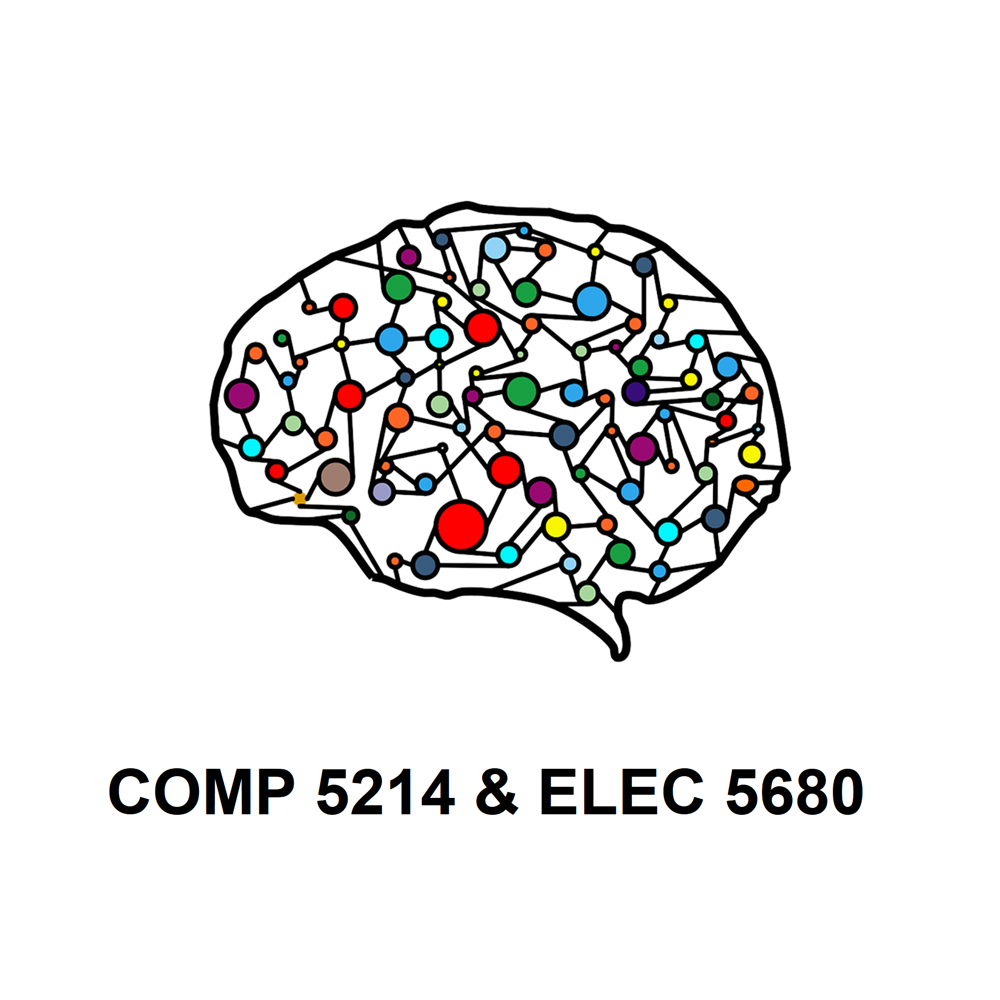

| Advanced Deep Learning Architectures |
| Spring 2022 |
|  |
|
SyllabusAdministriviaLecture: TuTh 12:00PM - 1:20PMInstructor: Qifeng Chen (cqf@ust.hk)
Course descriptionThis course focuses on advanced deep learning architectures and their applications in various areas. Specifically, the topics include various deep neural network architectures with applications in computer vision, signal processing, graph analysis, and natural language processing. Different state-of-the-art neural network models will be introduced, including graph neural networks, normalizing flows, point cloud models, sparse convolutions, and neural architecture search. The students have the opportunities to implement deep learning models for some AI-related tasks such as visual perception, image processing and generation, graph processing, speech enhancement, sentiment classification, and novel view synthesis.Course outline� Week 1-2: Overview of deep learning: Basic architectures (CNN, RNN), Backpropagation, Loss functions� Week 3: Neural networks for image and video recognition tasks � Week 4: Neural networks for image and video processing tasks � Week 5: Deep 3D learning for point clouds, meshes, and volumetric data � Week 6: Deep 3D learning for stereo and multi-view data � Week 7: Graph neural networks for graph processing and analysis � Week 8: Sequential modeling and signal processing � Week 9: Deep generative models: Normalizing flow, GAN, Pix2pix, and CycleGAN � Week 10: Efficient neural networks � Week 11: Neural architecture search � Week 12-13: Final project presentation and project report submission Recommended text
GradingThe breakdown is subject to change as a whole and adjustments on a per-student basis in exceptional cases. This is the general breakdown we'll be using:
|